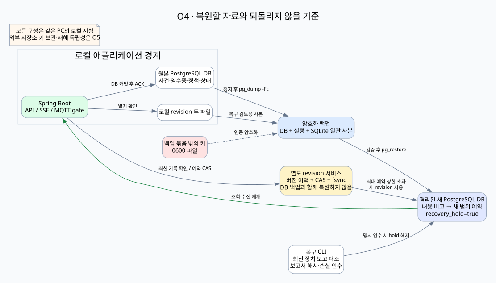

O4: 백업을 실제로 복원해 보기
O4는 로컬 복원 훈련이다. 기존 O2·O3 데이터와 분리한 parking-backup에서 PostgreSQL 백업, 암호화, 독립 revision 기록, 복구 보류와 명시 인수를 연결한다. 실제 외부 배포·외부 저장소 연결은 하지 않는다. 실행 결과는 현재 상태와 O4 검증 기록에 구분한다.
왜 DB 백업과 독립 revision 기록이 둘 다 필요한가요?
DB 백업은 데이터를 되찾는 자료이고, 독립 revision 기록은 과거 상태를 최신 상태로 오인하지 않게 하는 기준이다.
| 자료 | 담는 내용 | 할 수 없는 일 |
|---|---|---|
| DB 백업 | 그 시점의 사건·중복 처리 영수증·정책·계정·구역 상태 | 백업 이후 저장된 사건까지 복원 |
| 로컬 revision 두 파일 | 서버가 이미 예약한 번호 범위와 최초 초기화 기록 | DB와 두 파일을 함께 과거로 되돌린 사실의 독립 증명 |
| 독립 revision 기록 | 예약 범위·초기화 claim·복구 인수 기록의 버전 이력 | 사건 본문·사진 등 업무 데이터 복원 |
| 암호화 키 | 백업을 복호화하고 변조를 검사할 권한 | 키를 잃었을 때 백업을 되살리는 우회 방법 |
view_revision은 화면이 상태의 신구를 비교하는 번호다. 예를 들어 백업에 revision 120이 있고, 그 뒤 서버가 300까지 사용했다고 하자. DB만 120으로 돌려놓고 121부터 다시 사용하면 화면이 새 응답을 오래된 응답으로 버릴 수 있다. 백업과 두 파일까지 같이 되돌리면 로컬 검사끼리는 서로 맞아 보여도 같은 문제가 생긴다.
이를 막기 위해 번호를 백만 개 단위로 사용 전에 예약한다. 독립 기록의 상한이 1,999,999라면 복구 후에는 최소 2,000,000부터 새 범위를 쓴다. 남은 번호는 재사용하지 않는다. 백업 완료 직후에도 새 범위로 옮기므로 같은 실행 중에 만든 백업으로 돌아가도 경계가 드러난다. 임의의 비공식 DB 사본을 같은 범위 안에서 몰래 되돌리는 모든 경우를 탐지하는 사건별 원장은 아니다. 복원은 반드시 이 도구를 통한다.
독립 기록은 CAS(Compare And Set)로 갱신한다. “내가 읽은 버전과 해시가 아직 최신일 때만 새 기록을 추가”하는 방식이다. 다른 작업이 먼저 갱신했거나 기록을 읽지 못하면 멈춘다. 버전을 삭제하는 HTTP 기능은 제공하지 않는다.

그림을 크게 열기 ↗백업 성공은 어디까지 확인하나요?
- 이 환경의 웹·백엔드·가상 장치를 멈춰 세션/SSE와 쓰기를 정리한다.
- 읽기 전용
parking_backup으로pg_dump -Fc를 실행한다. PostgreSQL의 일관된 논리 백업을 사용한다. 계정 같은 클러스터 전역 객체는 단일 DB 덤프에 포함되지 않으므로 역할 생성·권한 스크립트를 함께 보관한다. PostgreSQL 공식 설명 - 두 revision 파일, 이미지 ID·소스/설정 해시, 암호화할 설정·자격증명, 역할 스크립트를 모은다. 가상 장치 SQLite는 backup API로 일관 사본을 얻는다. WAL 사용 중 파일 하나만 복사하지 않는다. SQLite backup API
- 별도 키로 전체 묶음을 Fernet 인증 암호화한다. 잘못된 키·바이트 변조는 파일을 사용하기 전에 거부한다. 키 자체는 묶음에 넣지 않는다. Fernet 공식 설명
- 방금 암호화한 내용을 다시 복호화해 새 임시 DB에
pg_restore --exit-on-error --single-transaction으로 복원한다. 모든 public 테이블의 행 수와 정렬한 행 내용 해시를 원본과 비교한다. PostgreSQL 복원 도구 - 독립 기록 → 로컬 기본 파일 → 로컬 사본 → DB 순서로 새 revision 범위를 확정한다. 어느 단계에서 끊겨도 불일치를 자동으로 고치거나 번호를 재사용하지 않는다.
- 암호화 산출물과 검증 기록을 남긴 뒤 서비스를 재개한다. 이때만 Prometheus의 마지막 검증 시각을 갱신한다.
백업 작업 중 잠깐 서비스가 중단되는 단일 서버 방식이다. 현재 도구는 메모리에서 처리하는 128MiB 이하 로컬 자료에 한정한다. 대용량 운영 백업은 스트리밍 암호화·여유 공간·시간 제한을 별도로 설계한다. 브로커 persistence는 사건 DB 백업을 대신하지 않는다.
복원은 어떤 순서로 하나요?
| 단계 | 수행 내용 | 아직 허용하지 않는 동작 |
|---|---|---|
| 무결성 검사 | 암호화 파일 checksum·인증·저장소 identity 확인 | 잘못된 백업으로 기존 서비스 중지 |
| 중지·격리 복원 | 기존 프로세스 중지, 새로운 parking_restore_* DB 생성, 권한 재적용·내용 비교 |
원본 DB 덮어쓰기 |
| 복구 보류 | 새 DB의 recovery_hold=true, 독립 최신 기록과 DB/두 파일의 최대 상한보다 큰 범위 예약 |
보호된 API·SSE·일반 사건/heartbeat·중복 ACK·정리 작업 |
| 장치 대조 | 기존 Schema·등록·정책·순서 규칙으로 더 최신 장치 보고를 별도 CLI에서 검증·커밋, 대조 증거를 audit에 기록 | 이 CLI의 응용 ACK 발행·명령 자동 재발행 |
| 보고서 확인 | DB 전체 지문·독립 버전·구역별 revision·장치 보고 해시 확인 | 오래된 보고서·대조 증거 없는 보고서로 개방 |
| 명시 인수 | 보고서 SHA-256와 백업 이후 ACK 자료의 손실 가능성을 지정해 인수 | 단순 재시작으로 hold 해제 |
| 재개 | 새 revision으로 API/SSE·일반 수신 재개, 남은 outbox 재전송 | 이미 삭제된 outbox 사건이 모두 돌아온다는 가정 |
복원된 snapshot은 과거 관측이다. 연결 상태는 OFFLINE으로 되돌리고 heartbeat 시각과 측정값을 비운다. 차량이 나갔다고 추정하지 않는다. 실제 명령·server outbox 자료가 있는 DB는 현재 로컬 인수 도구가 개방을 거부한다. 그 기능의 복구 정책은 별도 검토가 필요하다.
ACK 이후 손실 예: 10시에 백업하고 10시 5분 사건을 DB에 저장한 뒤 성공 ACK를 보냈다면, 장치는 그 사건을 outbox에서 지울 수 있다. 10시 백업으로 복원하면 10시 5분 사건은 사라지며 장치도 재전송할 원문이 없을 수 있다. 독립 revision 기록은 새 번호를 안전하게 정할 뿐 이 사건을 복구하지 않는다. 더 촘촘한 백업이나 WAL/PITR는 향후 별도 선택이다.
RPO는 허용 가능한 데이터 손실 구간, RTO는 서비스 복구에 걸리는 시간이다. 최초 목표는 각각 24시간·60분이지만 보장이 아니다. 이번 검증은 실제 백업 시각부터 장애까지의 경과, ACK 후 백업에 없는 사건 수, 복원 시작부터 HTTPS 재개까지를 기록한다. 작은 가상 자료에서의 실측을 실제 서버 SLA로 확대하지 않는다.
직접 실행하기
저장소 루트에서 실행한다. Docker가 켜져 있어야 한다. 암호는 화면에 출력하지 않고 파일로 관리한다.
python3 -m venv .local-state/backup-python
.local-state/backup-python/bin/pip install -r tools/production/requirements-backup.txt
.local-state/backup-python/bin/python tools/production/local_backup.py prepare
.local-state/backup-python/bin/python tools/production/local_backup.py simulate
.local-state/backup-python/bin/python tools/production/local_backup.py backup
제품 주소는 https://localhost:20443, Grafana는 http://localhost:23000/d/parking-backup이다. 제품 계정 https-viewer의 암호는 .local-state/backup-demo/accounts/https-viewer.password, Grafana 계정 monitoring-admin의 암호는 .local-state/backup-demo/secrets/grafana-password에 있다. 시험 CA는 .local-state/backup-demo/pki/ca.crt다. 운영체제 신뢰 저장소는 변경하지 않는다. 필요하면 node tools/production/open_https.mjs --state .local-state/backup-demo로 이 시험 인증서만 허용한 학습 브라우저를 연다.
백업 명령이 출력한 파일을 선택한다. 아래 선택한-백업.fernet과 보고서-SHA256을 실제 출력으로 바꾼다.
.local-state/backup-python/bin/python tools/production/local_backup.py restore .local-state/backup-demo/backups/선택한-백업.fernet
# 이 시점에는 로그인해도 구역/API/SSE는 503이며 일반 MQTT 성공 ACK도 없다.
.local-state/backup-python/bin/python tools/production/local_backup.py capture
.local-state/backup-python/bin/python tools/production/local_backup.py reconcile .local-state/backup-demo/device-report.json
cat .local-state/backup-demo/recovery/report.json
# 대조 결과와 데이터 손실 가능성을 확인한 뒤, reconcile이 출력한 SHA-256을 지정한다.
.local-state/backup-python/bin/python tools/production/local_backup.py accept 보고서-SHA256
.local-state/backup-python/bin/python tools/production/local_backup.py simulate
capture는 가상 장치의 새 보고를 만들고 outbox에 넣는 학습 명령이다. 실제 장치의 현장 대조를 대신하지 않는다. 복원 때 살아 있는 장치의 SQLite를 과거 사본으로 덮어쓰지 않는다. 저장된 SQLite 사본은 별도 복구 검토 자료다. 실제 장치의 순번까지 유실되었다면 임의로 번호를 추측하지 않고 장치 identity·순번 복구 절차를 정해야 한다.
prepare 재실행은 기존 데이터를 보존한다. 중지는 local_backup.py stop, 재개는 local_backup.py up이다. O4 환경은 O4 도구로 조작한다. O2/O3 도구로 overlay를 생략해 기동하지 않는다. 설정 변경·누락된 secret·독립 저장소 유실은 자동 재생성하지 않는다. 복구 실패 때는 원인과 보고서를 확인하고 prepare 복구 단계를 새로 수행해 미완료 예약 범위를 건너뛴다. 정상 기동이나 초기화 명령으로 우회하지 않는다.
기존 자료 인수는 오프라인 RecoveryCli adopt가 담당한다. 최초 도입 시에만 빈 독립 저장소와 일치하는 두 로컬 파일·DB를 요구하고 새 범위와 hold를 만든다. 과거의 유실된 독립 기록을 새로 만들기 위한 명령이 아니다. O1/O2/O3의 현재 학습 DB는 이번 작업에서 인수하거나 변환하지 않았다.
원장 컨테이너는 호스트 원장 폴더의 소유자 UID:GID로 실행한다. 폴더 권한 0700과 cap_drop: ALL은 유지한다. Linux에서는 권한을 제거한 root도 다른 사용자의 비공개 폴더를 열지 못하므로 실행 계정을 맞춰야 한다. 이전 구성으로 만든 학습 환경은 설정 해시 변경으로 재개가 차단될 수 있다. 기존 원장·키·DB를 삭제하거나 manifest 해시만 고치지 않고, 아래 격리 인수 명령으로 새 환경을 검증한다. 기존 자료를 새 구성으로 옮기는 마이그레이션은 이번 수정에 포함하지 않았다.
대시보드에서 볼 것
O3의 운영 지표에 O4 전용 대시보드 3개 패널을 추가한다.
| 지표 | 의미·확인할 일 |
|---|---|
| 마지막 검증 백업 이후 경과 | dump 생성 시각이 아니라 복호화·실제 복원·내용 비교·범위 예약을 모두 통과한 시점. 24시간을 넘으면 경고 |
| 백업 검증 기록 유효 | 0이면 미실행·누락·손상·미래 시각 등으로 기록을 신뢰할 수 없음. 1분 지속 시 경고 |
| 복원 후 조회 준비 | hold 또는 독립 기록 불일치면 0. DB health가 살아 있어도 조회 준비는 별개 |
지표는 실제 검증 기록을 읽는다. 파일이 없는데 성공을 기본값으로 만들지 않는다. Grafana에서 정상으로 보여도 외부 백업 저장소·암호화 키가 재해 후 살아 있는지까지 증명하지 않는다. O4 경보는 내부 규칙이며 외부로 알림을 발송하지 않는다.
저장 위치와 남은 운영 조건
| 로컬 위치 | 내용 |
|---|---|
.local-state/backup-demo/backups/ |
암호화 묶음·공개 가능한 checksum/검증 요약 |
.local-state/backup-keys/<ID>.key |
0600 암호화 키. 백업 묶음 밖에서 관리 |
.local-state/revision-ledgers/<ID>/ |
별도 서비스의 append-only SQLite 버전 기록. DB 백업에 넣거나 되돌리지 않음 |
.local-state/backup-demo/recovery/report.json |
가장 최근 복구 점검/인수 보고서 |
모두 같은 PC에 있으므로 디스크나 PC가 통째로 사라지면 함께 잃을 수 있다. 로컬의 저장 경계 분리와 실제 재해 독립성은 별도다. O5에서는 외부 저장소의 최신성·조건부 갱신·버전 보존·삭제 권한·TLS·비용, 독립 백업 위치, 키 보관과 복구 담당자를 실제 공급자에서 검증해야 한다. 저장소 관리자 탈취나 독립 원장 자체의 과거 복원까지 자동 방어한다고 주장하지 않는다.
일일 03:00 KST·배포 전 백업, 일별 7개·주별 4개 보존은 운영 목표다. 이번 로컬 작업은 자동 스케줄이나 자동 삭제를 설치하지 않는다. 새 원격 저장소의 보존 정책과 백업 실패 알림을 검증한 후 운영 서버에서 설정한다. 실패한 백업도 최근 성공 시각을 갱신하지 않아야 한다.
검증 재현
.local-state/backup-python/bin/python -m unittest discover -s tools/production -p 'test_*.py' -v
.local-state/backup-python/bin/python tools/production/verify_o4.py
두 번째 명령은 임시 parking-o4-*와 별도 DB/파일/키를 만들고 종료 시 그 자원만 정리한다. 최종 성공 문구는 O4_ACCEPTANCE_PASSED다. 기존 parking-local, O2/O3, 다른 프로젝트 데이터는 건드리지 않는다. 전체 검증 중 Docker 메모리가 부족하면 먼저 자신이 실행한 학습 환경을 데이터 보존 상태로 중지한다.